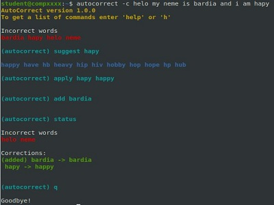
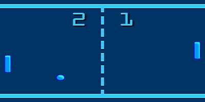
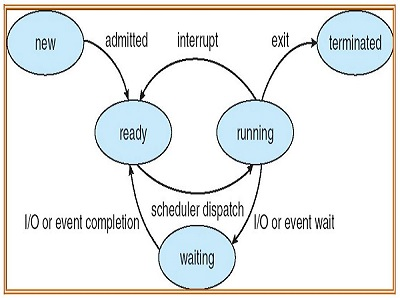
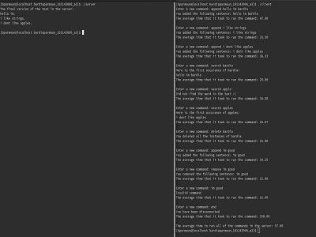

Projects
LIBER
- Developed an online bookstore website using PHP and PostgreSQL that allows users to order books online.
- Designed and implemented the database in PostgreSQL with proper triggers, functions, views, and procedures.
Monopoly Simulator
- Developed a Java based version of the game Monopoly following the MVC design pattern, maximizing maintainbility.
- Utilized reinforcement learning to add the option of having AI players in the game.

Terminal Spell Checker
- Developed an object oriented program in C++ to scan a given text, through direct input or a file, for spelling errors and provide suggestions.
- Created a command line interface (CLI) with various commands such as scanning the input, getting suggestions, applying suggestions, etc.
- Created a bash script to compile the program and add the executable to the proper directory so it could be used as a Linux command.

Embedded Pong
- Created an embedded Pong game using Python, controlled via a MSP432R board through the UART protocol.
- Developed a program in C using the Keil IDE to configure the LEDs, switches, and serial port with the proper GPIO and interrupts

Scheduler and Kernel Simulator
- Created a simple kernel simulator using C which uses a text file as input to run multiple processes with interrupts.
- Created a scheduler to implement various scheduling algorithms including FCFS, Priority, and Round Robin with the option of memory allocation using the first fit algorithm.
- Documented the code with proper comments and added a simple UI to use the scheduler easily
ARM Processor Simulator
- Designed a 64 bit ARM processor in Logisim that fetches instructions from the main memory and executes them.
- Developed programs for the processor in Assembly to handle various tasks with strings, arrays, I/O, and interrupts.

Text Server
- Created a text server using C, shared memory, and Linux message queues to achieve communication between a client and a server
- Implemented various commands to add or remove sentences and search or delete specific words to or from the text.
- Created an easy to use command based UI to allow the client to easily interact with the server and obtain proper responses.
Multithreaded Matrix Multiplier
- Created a concurrent matrix multiplier using C, shared memory, and fork system call to achieve faster results.
- Configured the program to be easily changed to a matrix of any size and made sure it avoids race conditions.

Virtual Shop
- Worked together with another student to develop an object oriented program that simulated the behaviour of an online store using java.
- Developed an interactive GUI using swing and a command based UI which could handle multiple customers at a time.
- Followed the software development life cycle by creating different UML diagrams and documenting the full process.
Photo Editing Program
- Guided three students in creating a photo editing program using Python; the program lets the user add 13 different filters to images
- Documented the entire lifecycle of the project and created a detailed README file to facilitate future implementation
Settlers of Catan
- Simulated the boardgame Settlers of Catan in Turing with creative graphics and the option of playing with the computer
- Implemented all of the features of the game along with their related graphics, and used various programming techniques such as OOP, recursion, etc.
Tetris
- Simulated the game tetris using Visual Basic.
- Implemented all of the features of the game such as rotations, speeding up, etc.
Awards
Dean’s Honour List
Dean’s Honour List recipient for the years 2019-2020 and 2020-2021 for having a gpa of A or above.
Learn MoreGovernor General’s Bronze Medal
Highest graduating average in 2019: Winner of the Governor General Bronze Medal.
Learn MoreOntario Scholar - 2019
Ontario Scholar 2019 for having a graduating average of A or above.
Learn MoreOCDSB Student Recognition Award
Winner of the OCDSB Student Recognition Award 2019 for outstanding community activities.
Learn More